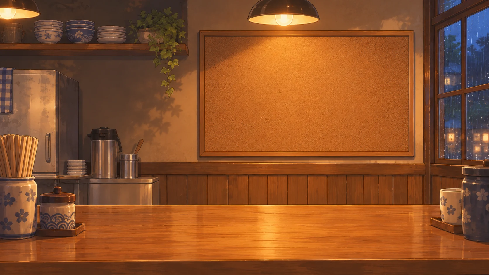
加载中…
把日子，吃得有滋有味。
A TASTE OF EVERYDAY
INWT · FOOD TRAIL
沿着吃过的地方，翻一翻当时的味道。
INWT'S DINER · 用餐留念
LET YOUR APPETITE WANDER
芒果 + 抹茶慕斯 + 海盐奥利奥奶芙 + 伯爵红茶奶冻
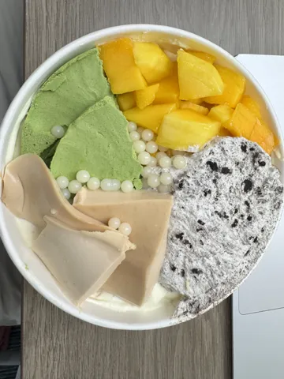
肖世屹母亲爱心便当
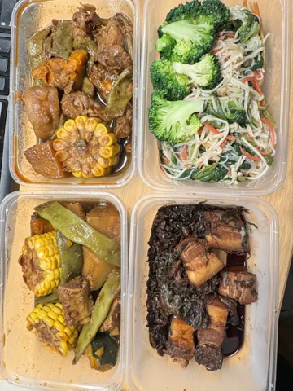
很正宗的云南饵丝，不过我吃不太惯，到后面有点糊嘴
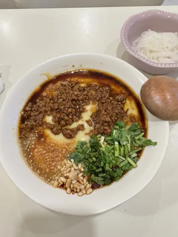
女仆咖啡厅，得劲魔法～
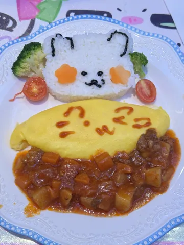
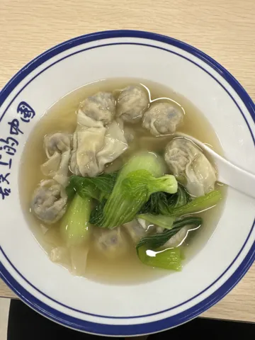
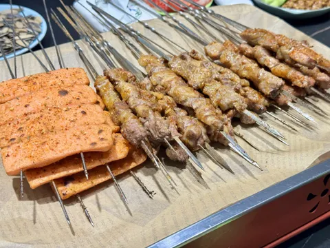
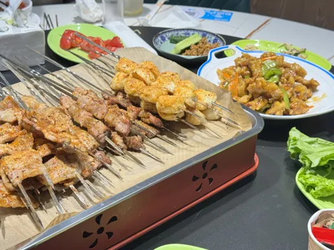
鱼鳍请客～
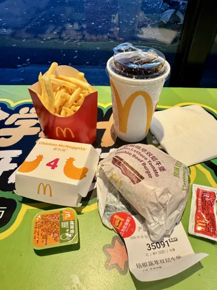
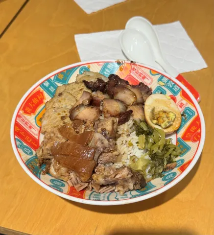
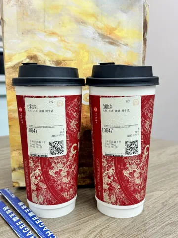